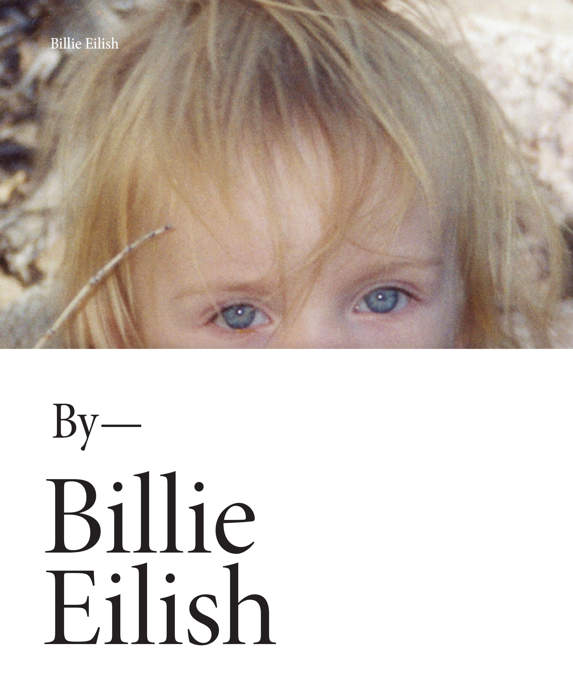

book
Legendary recording artist Billie Eilish shares an intimate inside look at her life and career—both on and off the stage—in this stunning, photo-filled book. Billie Eilish is a 21st century global pop-phenomenon. Uncompromising and unapologetic, between her record-breaking, award-winning music and artistry, it's no surprise that she has become one of the biggest and most loved artists of her generation. Now in her first book -- a stunning visual narrative journey through her life -- Billie is ready to share more with her devoted audience for the first time, including hundreds of never-before-seen photos. This gorgeous book will capture the essence of Billie inside and out, offering readers personal glimpses into her childhood, her life on tour, and more. It will be a must-have for every fan. Published simultaneously with the book, Hachette will release a standalone audiobook of exclusive, unique content in which Billie reflects on her life. Including never-before-told stories and recollections from her personal life and career, from the early years to her breakout success and including memories shared by her parents, this is an audiobook like no other – providing a truly intimate window into her journey, in Billie’s own words.